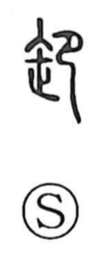

卸

Uncategorized
Kun: orosu, oroshi | On: sha
to unload ・ wholesale ・ to take down
Explanation
Shirakawa reads 卸 as a ritual scene: a kneeling, bowing figure (the 卩 element) facing a sacred implement—variously shown as the “thread‑end” sign or a pestle—objects used in cursing rites. The graph depicts the act of reverent prostration to welcome the descending deity while driving off and subduing evil spirits. From this sacred ceremony the sense later shifted to concrete actions such as untying and taking things down from horse or cart, and thus to unloading goods—hence the Japanese orosu/oroshi and the commercial meaning “wholesale.” The form also served as the original graph of 御.